Foundations — the physics kernel
The engine
Billiards is one of the few games whose physics has exact piecewise solutions, and this kernel is built on that fact: it never steps time, it solves each shot as a sequence of events feature 001. The paper anchors, the byte-identical replays and the millisecond breaks all follow from that one decision, and every number on this page resolves to a repository artifact you can re-run.
01 — Solved, not stepped
How it works
A conventional engine advances the whole world by a fixed timestep, then repairs whatever went wrong inside it. Billiards punishes that approximation: a ball–ball impact lasts roughly 100–600 µs, so holding overlap error near 0.3 mm needs a step around 30 µs. That is about 30,000 steps for one ten-second shot, and every step deposits a little integration error into the next the engine research (internal).
This kernel asks a different question. Between collisions a billiard ball occupies one of a handful of motion states (sliding, rolling, spinning, airborne, at rest), and each state has a closed-form trajectory: position is a low-degree polynomial in time. So instead of “where is everything after the next frame”, the simulator asks “when is the next event”, and that question has an exact answer: the earliest real root of polynomials of degree four or less, one per candidate interaction feature 001. The root-finding lineage is public: ACM TOMS Algorithm 1010 (Orellana & De Michele 2020).
Resolve the event, snapshot the affected balls, repeat until every ball rests. A full shot is roughly 5,000–25,000 polynomial root solves instead of tens of thousands of error-accumulating integration steps, with precision limited by floating point rather than step size the engine research (internal). And because motion between events is a formula, any instant is addressable: samplers reconstruct the exact table state at arbitrary time, which is why replays scrub smoothly and the renderer makes at most one batch sampling call into the kernel per frame concepts · events Constitution.
Figure — one break, two ways to compute it
Event times are verbatim from the shipped break record’s curated timeline, the same record the landing page scrubs break-scrub/manifest.json; the step count is the tolerance-matched estimate for a time-stepping engine on the same shot the engine research (internal).
02 — Measured physics
Grounded in measured physics
Exact solving is only as good as the models being solved, so the models are constitutional: every physical model in the kernel must carry a literature citation, as a matter of ratified law Constitution. The lineage runs from Coriolis 1835 through Han 2005 cushion mechanics (as corrected), Mathavan 2010’s high-speed-camera cushion measurements, Stronge impact mechanics, and Alciatore’s velocity-dependent throw experiments literature.md the anti-overfit audit (internal). The default cloth is a worsted tournament cloth, built from published measurements cloth-calibration.md.
The papers are not decoration; they are regression anchors. The Mathavan 2010 cushion model was checked against the paper itself: its Figs 7–10 were digitized to 247 points and 240 agree with the kernel within digitization uncertainty plus 5%. The remaining 7 are cases where the paper’s published figures contradict the paper’s own equations, and each is pinned and documented rather than tuned away the kernel contract. Published banking data holds too: across 18 encoded anchors, Jewett’s measured rolling-vs-sliding rebound spread of 14°±2 comes out at 15.0° on the kernel default the banking audit (internal).
Four literature-verified effects separate billiards that feels real from billiards that merely looks plausible, and all four ship:
- Velocity-dependent throw — ball–ball friction falls with impact speed (Alciatore µ(v)), bending cut shots the way real balls bend.
- Endmass squirt — off-center cueing deflects the cue ball as a function of the cue tip’s effective end mass, not the whole stick.
- Cushion speed/spin coupling — rails return energy as a function of arrival speed and spin, never as one constant.
- Three independent cloth frictions — sliding (≈0.2), rolling (≈0.01) and spin decay, one to two orders of magnitude apart, each with its own law.
The four-pack is the project’s realism gate the feel four-pack; the friction magnitudes are the literature’s the engine research (internal).
Calibration is guarded against wishful thinking by an explicit anti-overfit audit: any fitted preset that flatters the reference footage but degrades independent anchors is demoted to opt-in, never default. The audit also runs the opposite test, prediction: a worn-ball friction fit trained only on hop apexes and cut throws produced µ(5 m/s) = 0.0419, inside Alciatore’s independently published dirty-ball band [0.034, 0.057], data the fit never saw the anti-overfit audit (internal).
The equipment is referenced the same way. Every user-facing catalog entry carries genuine provenance on a declared tier (calibrated, literature, or estimated), and the default table is the measured 9-ft tournament table (4.5 in pockets) rather than a generic placeholder feature 010 the kernel contract. The snooker and carom tables cite WPBSA and UMB specifications respectively the equipment provenance record (internal), and snooker corner pockets collide as true receding jaw arcs, re-derived from the published CEBP construction template after the first model clamped them feature 012 the pocket verification record (internal).
03 — Determinism
Deterministic by construction
The kernel is a pure function: initial state, shot parameters and a seed go in, an event list comes out. No ambient randomness, no wall-clock reads, no NaN in state. The canonical build is a single committed WebAssembly binary, bit-exact across platforms because wasm float semantics are part of the WebAssembly spec, so determinism is a build property rather than a discipline problem Constitution. Even simultaneity is deterministic: events that fire at the same time are ordered by a frozen comparator, so the same break is the same break down to the event order concepts · events.
A replay is therefore just parameters plus a seed, re-simulated. It reproduces byte-identically on any machine, forever verifiable; every record embeds the kernel version hash and cross-version replay is refused by design instead of silently drifting feature 001 feature 005.
| Gate | Result | Where |
|---|---|---|
| Cross-OS byte-compare, every merge | x86_64 ≡ arm64 record JSON | ci.yml · determinism |
| Native ↔ wasm backends | 7/7 records byte-identical | determinism-cross.sh the parity audit (internal) |
| Three surfaces, one golden scenario | CLI ≡ TypeScript ≡ Python, byte-for-byte | cross-surface.sh feature 005 |
| Rules verdicts, frozen 430-case corpus | 430/430 byte-identical across three legs | rules-conformance.mjs feature 013 |
Determinism is the trust model, not a tidiness preference. It is what lets a shared shot travel as parameters instead of video, lets a server re-verify any claimed run, and turns every figure in these docs into a command: same seed, same parameters, same bytes, on your machine too.
04 — Honest numbers
Honest numbers
One kernel runs all five shipped disciplines: nine-ball, eight-ball, one-pocket, snooker and carom three-cushion feature 012. Budgets are per-discipline, written into the constitution, and asserted in CI against the committed canonical wasm on every merge, never against a flattering local rebuild Constitution.
| Workload | Measured | Budget | Source |
|---|---|---|---|
| Pool 15-ball break, canonical wasm in-browser (compliant multibody cluster default, feature 018) | 7.74–7.98 ms p50 | < 10 ms p50 | Constitution |
| Pool 15-ball break, native | 3.76 ms | informational | the break scorecard (internal) |
| Typical pool shot | 98.9 µs native · 0.18 ms wasm | < 1 ms | the parity audit (internal) |
| Snooker break-class shot, 22 balls, worst seed | 13.97–14.32 ms p50 | < 18 ms p50 | Constitution |
| Snooker adversarial multi-rail shot | 15.18–15.44 ms min | < 20 ms min | Constitution |
| Carom, any shot | 0.09 ms p50 | < 1 ms | Constitution |
| Whole-table batch pose sample, per rendered frame | ~4–5 µs per call | < 50 µs | Constitution |
Honesty notes. Budgets target a quiet 2020-class laptop; the measurements above were taken on Apple M-series hardware, which is faster, so the budgets are the binding claim and the measurements are the current margin Constitution the parity audit (internal). The snooker rows exist because 22 balls on a longer, slower cloth honestly cost more than pool; the constitution was amended with a per-discipline table rather than quietly capping shot speed.
What the margin buys: at 98.9 µs per typical native shot, one core sustains roughly 10,000 physics-true shots per second for batch analysis and AI rollouts the parity audit (internal), and physics stays entirely off the frame path: one shot is simulated once, then rendered from its record with a single batch sample per frame Constitution.
05 — Validated on camera
Watch the rules hold
The literature this kernel is built on makes testable claims — the 30° and 90° rules, squirt, cling, bank ladders, kick systems, the lag — and this gallery is those claims run live, on camera. Each clip stages one canonical effect from the verification battery and films the kernel’s own record of it: the battery cell it claims is re-simulated on the canonical wasm and must reproduce its pinned record byte-for-byte before a single frame is captured, and every number burned into the frame is re-measured from that record at render time the verification battery (internal) the scenario catalog (internal).
The claim line under each tile quotes the clip’s own corner badge — the prediction from the cited paper next to the value measured off the record — digit for digit; the misses are shown as honestly as the hits (the massé BAR rule misses by design, and the tile says so). The clips play in place as they scroll into view, muted and looping (they carry no audio track by construction); click a tile to pause or resume it, and the corner control takes it fullscreen. If you prefer motion on your own terms (reduced motion, Save-Data), tiles wait for your click instead.
Aiming systems

predicted 33.70° · measured 33.71° gates
natural-roll peak deflection
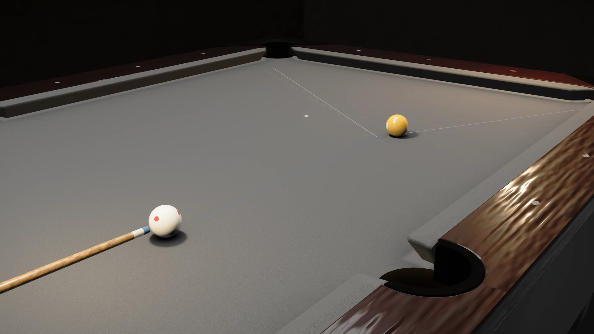
ideal 90.0° · predicted 86.37° · measured 86.37° gates
stun tangent-line separation
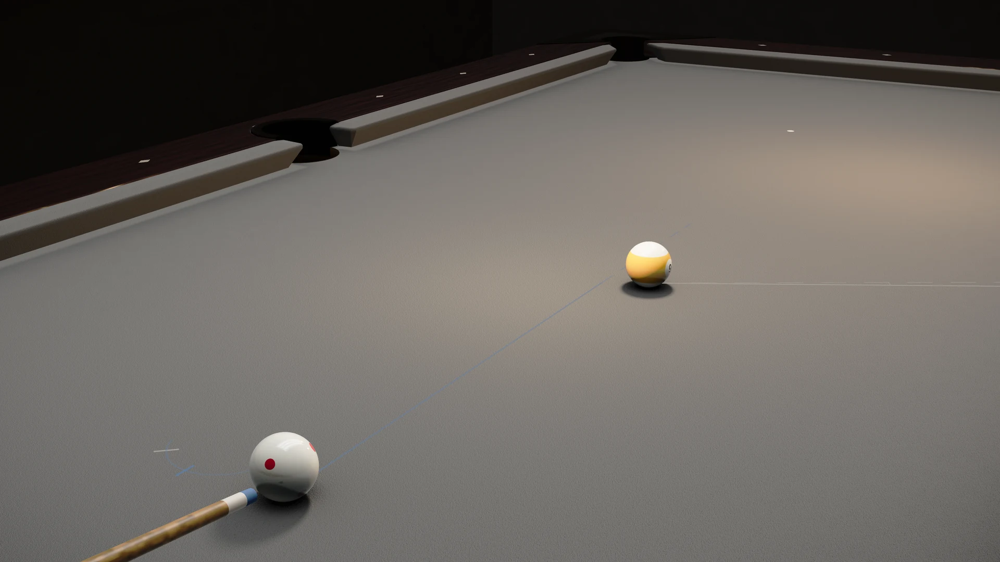
predicted 68.97% · measured 68.84% gates
outside spin at the gearing ratio cancels cut-induced throw: the balls mesh like gears
Throw & friction

predicted 3.12° · measured 3.12° gates
sidespin pushes the cue ball off the aim line
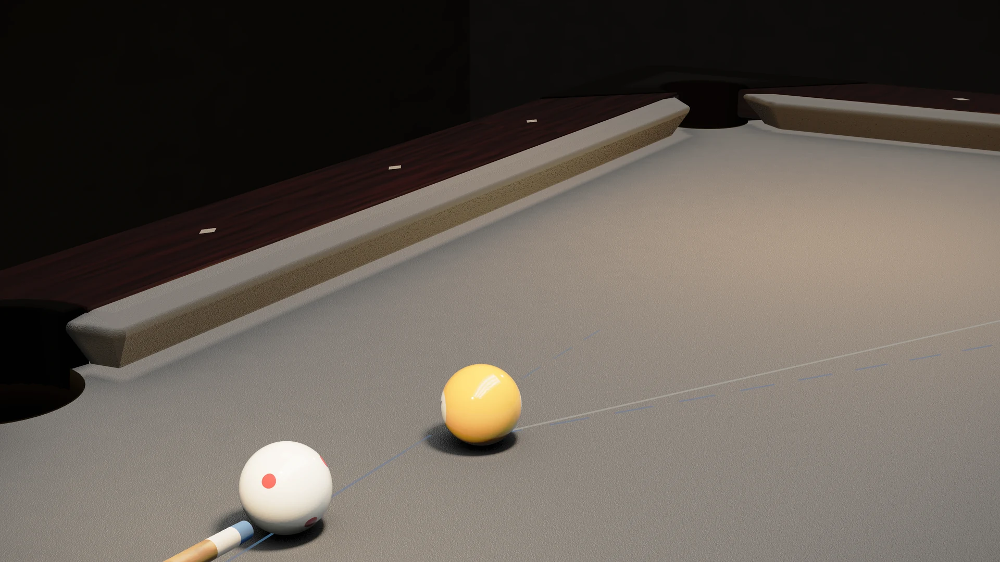
predicted 5.25° · measured 5.25° gates
the mu(v) master curve, dead-on at half-ball
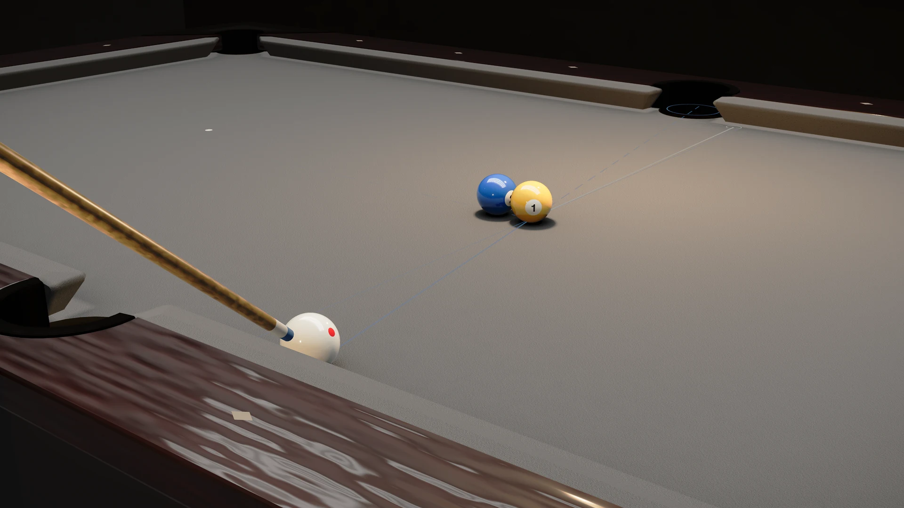
predicted r 0.100 · measured r 0.141 gates
frozen-pair kiss-shot direction control
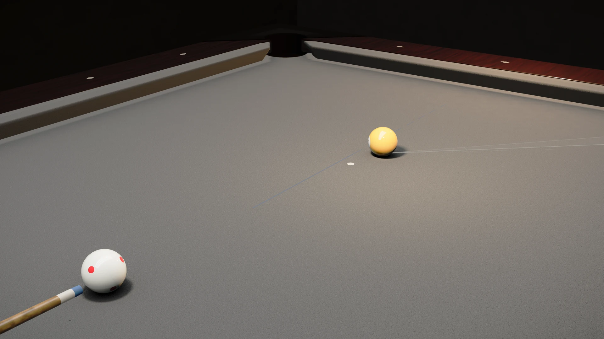
predicted 2.60° / 7.75° (friction ×3) · measured 2.60° / 7.75° gates
the identical shot twice: only chalk friction differs — clean pots, chalked throws ×3 and misses
Spin & cloth
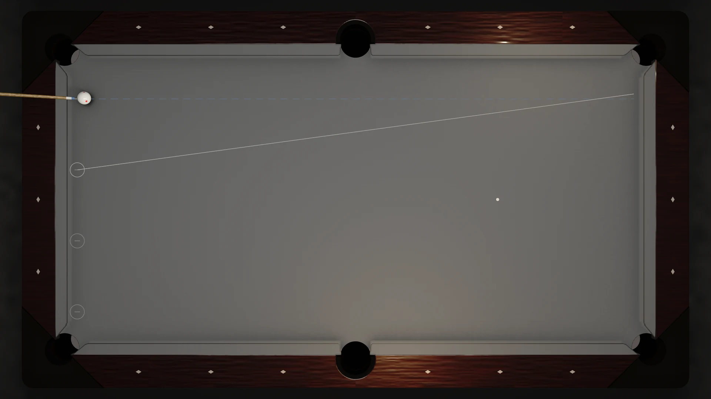
predicted 1 / 2 / 3 dia · measured 1.03 / 2.06 / 2.90 dia gates
the english kick ladder
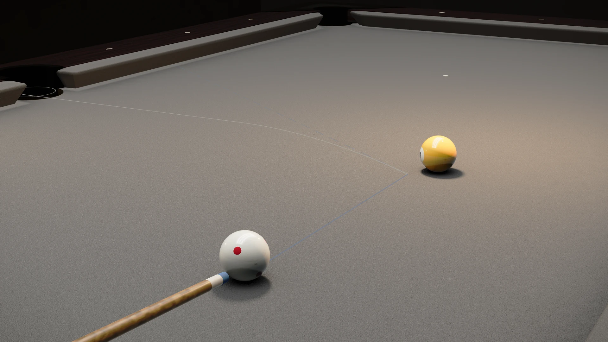
predicted bend 35.3° / 41.7° / 44.2° · measured arc 99.2 / 131.2 / 27.3 mm gates
heavy draw on a cut ALWAYS bends; the arc outgrows the table (issue #53)
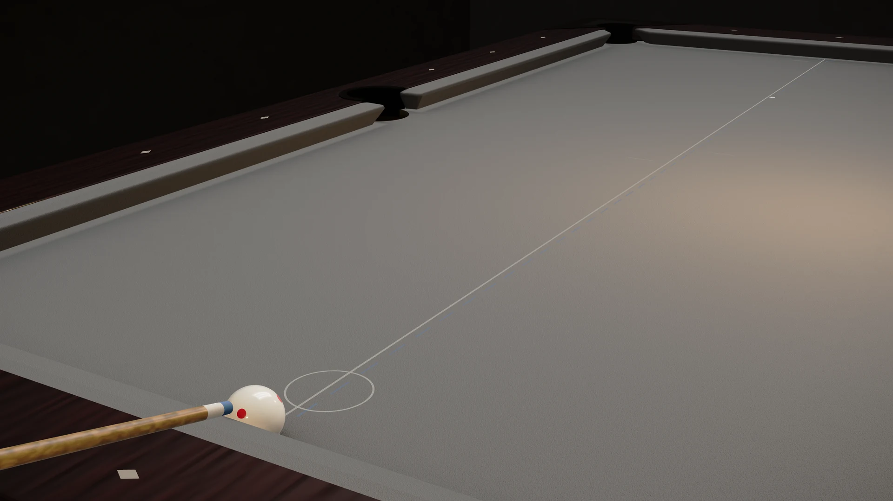
predicted 2.00 TL · measured 2.03 TL gates
TP B.6 printed lag speed
Cushions & banks

predicted 5.07–6.22 · measured 5.32 gates
TP B.28 five-table envelope
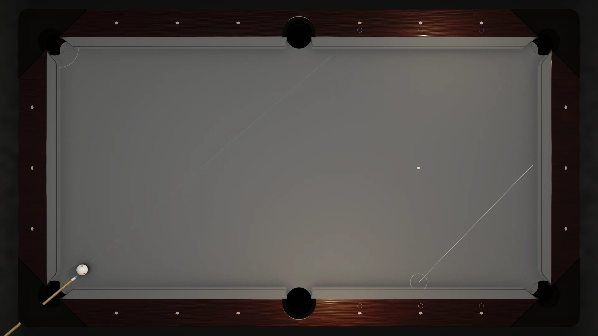
predicted dia 2.00 · measured dia 1.93 gates
the 5-3-2 benchmark track
Airborne & break
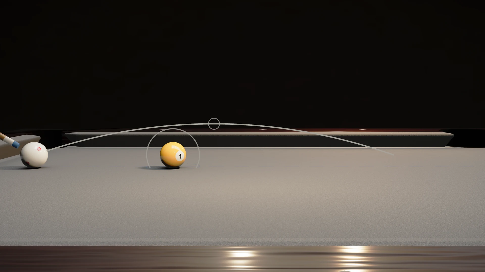
predicted min elevation 30° · measured 30.0° clears +7.0 mm · 25.0° clips gates
ballistic clearance over a full ball
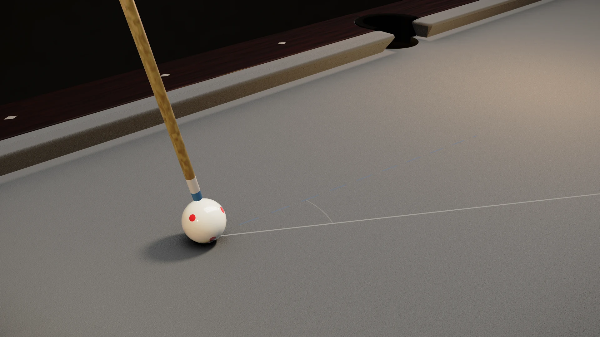
BAR predicts 56.23° · measured 64.94° · turn 8.71° short gates
Coriolis' rule as an aiming approximation under test at 74°
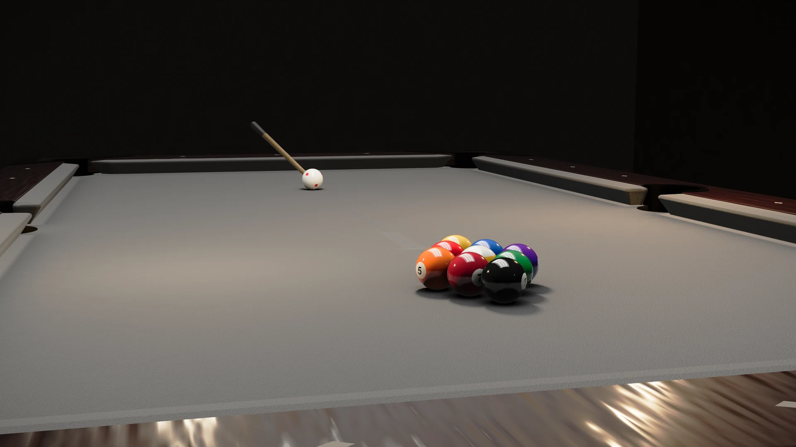
predicted 0.15–0.35 · measured 0.159 gates
square stun break at the pro ceiling
15 clips · 204.5 s of graded video · 43.0 MB · kernel 0.1.0+208e1dc4 / 0.1.0+dedc61cd (per-entry stamps in the gates records). Every clip is a deterministic re-simulation: the battery record it claims is re-simulated on the canonical WASM kernel and must match its pinned record byte-for-byte before a frame is captured, and the numbers on screen are re-measured from that record at render time, never typed in the scenario catalog (internal) physics-data.json.
06 — The field
Why not a general-purpose engine
The first architectural decision on record is a refusal: no general-purpose physics engine for gameplay. It was researched before it was decided, and the finding is structural rather than a matter of tuning effort the engine research (internal). PhysX, Bullet, Jolt and Rapier are superb at what they are built for; billiards asks for things they do not carry.
| Requirement | Measured reality | General-purpose engines |
|---|---|---|
| Three separated frictions | Sliding ≈0.2, rolling ≈0.01, independent spin decay: 1–2 orders of magnitude apart, each driving its own motion state | PhysX, Jolt and Rapier ship no rolling or torsional friction at all; Bullet ships both behind a documented bug history (curved rolling trajectories, #2117; spin friction inert unless rolling friction is set, #4188 still open) |
| Continuous collision incl. rotation | 57 mm balls at up to 10 m/s carrying hundreds of rad/s | Sweep CCD covers linear motion only, and PhysX disables friction inside CCD; Rapier’s nonlinear CCD is the honest exception |
| Velocity-dependent restitution | Ball–ball COR 0.92–0.98 and cushion COR 0.6–0.9, both speed-dependent and spin-coupled | Constant restitution scalars everywhere, at most a bounce threshold or spring-damper softness |
| The frozen break | 15 balls in simultaneous contact at the strike | Pathological for iterative impulse solvers: non-unique simultaneous solutions, PGS convergence limits acknowledged by Bullet’s own author; the event kernel resolves break-scale frozen clusters with a deterministic fixed-step compliant multibody model (Hertz–Lankarani–Nikravesh contact, Jacobi concurrent advance — feature 018), never iteration-to-convergence |
| Cross-platform bit determinism | Replays and online play re-simulate from parameters | Formally promised by two of the four, at real cost: Jolt at ~8% and self-described as less tested, Rapier by giving up SIMD and parallelism |
Every cell above traces to the decision research the engine research (internal). None of it is a defect in those engines: they are built for general worlds, and billiards is a special world with an exact structure worth exploiting.
Against the strongest closed-source commercial simulators the method is measurement, not adjectives: this kernel is scored frame-by-frame against the best available slow-motion footage, currently 53 of 56 behavioral checks passing with zero failures and every miss root-caused in writing, including the ones where the video still wins the footage scorecard (internal) the parity audit (internal). Where footage contradicts published physics, the literature wins and the deviation is documented as by-design. And unlike a closed box, every scorecard here can be re-run by anyone.
07 — Where next
Put it to work
Start
Getting started
Install a surface and run your first deterministic break in sixty seconds.
Foundations
Concepts
Determinism, the scenario model, event records, the equipment catalog.
Play better
Gameplay guide
Spin, banks, position play: the physics above, at the table.
Apply it
Play the table
Every shot in the app runs on the kernel documented on this page.